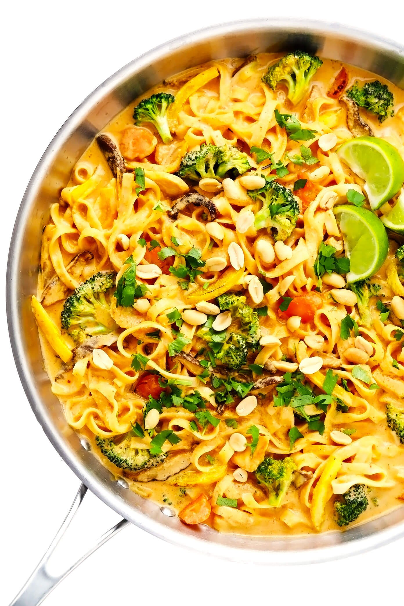

Peanut Curry Noodles

Description
Noodles with a savory peanut sauce and spicy kick from the curry
Ingredients
Your favorite noodle or pasta
1 tbsp Peanut Butter
1/2 Cup of Any Oil
1/4 Cup of Soy Sauce
1 tbs Cumin
2 tbs Curry Powder
1 tbs Red Pepper flakes
1 tbs Garlic Powder
1 tbs Onion Powder
1/2 tps Salt
1 tbs Pepper
1 stalk of Green onions
Steps
- Combine salt, pepper, garlic powder, onion powder, chili flakes, cumin, soy sauce, and the whites of the green onions into a large heat proof bowl.
- Heat up oil until smoking and pour into the bowl with all the spices
- Add in peanut butter and mix until even
- Add in the noodles and the rest of the green onions and mix thoroughly